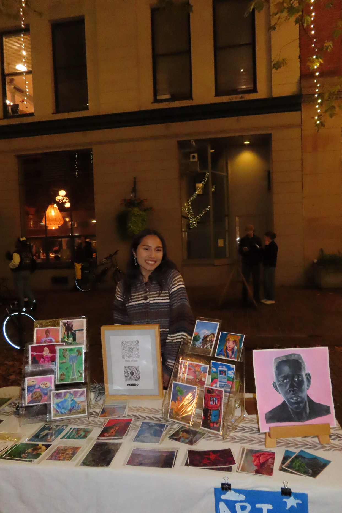

Raging ADHD-er
Hi, I'm Trina.
Techie by day, artist by night (and weekends), I love to dabble in gouache, oil, and watercolor paints during my free time. I'm also addicted to buying an obnoxious amount of yarn and leather for other craft endeavours and I'm learning how to sew as well.
Outside of my sedentary crafts, I like to be active and hike/backpack, play tennis and volleyball, and snowboard. I know...it's a lot....